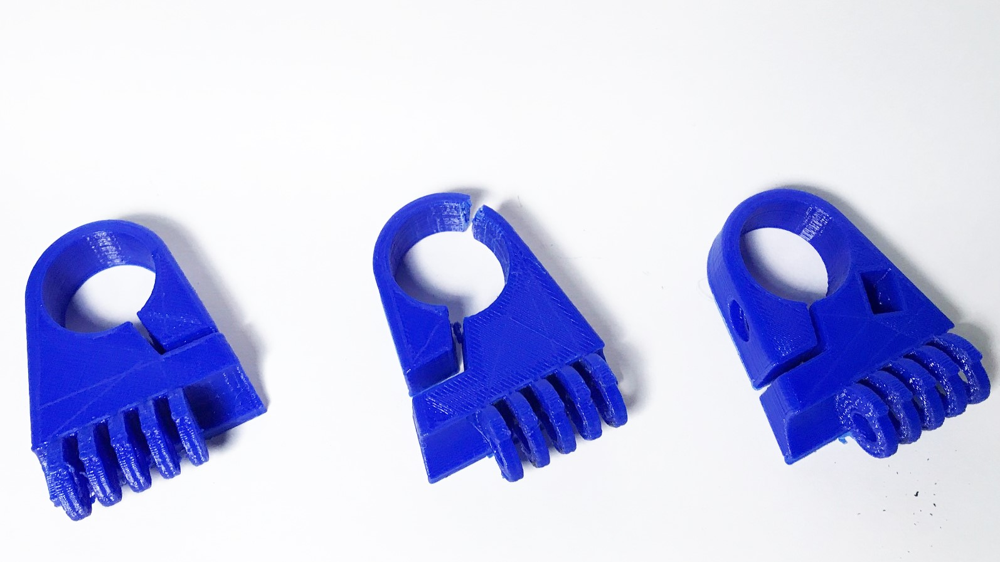
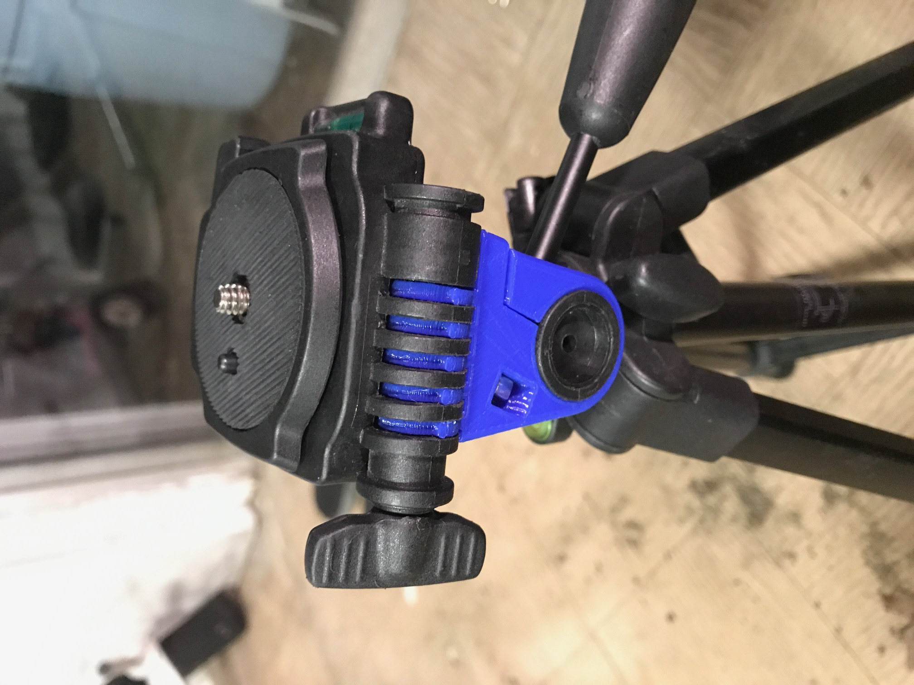

3D Printer
I bought the 3D printer as a kit right after graduation. The printer is a TEVO Tarantula, one of the lower end Prusa I3 style printers. After a lot of calibration and tweaking, I have actually gotten some cool prints out of the machine. Recently I took a broken tripod I had dropped, snapping one of the brackets. I measured the previous part and tried to match the dimensions as close as possible. Because of the low turn-around time of the printer, I was able to iterate through designs until I got one that worked.
|  |
|  |